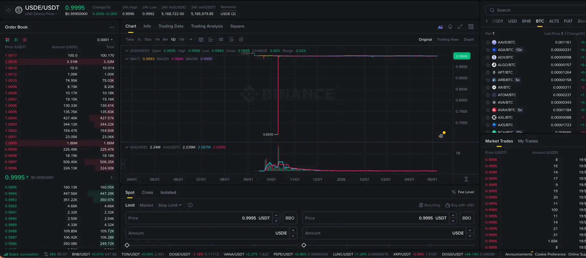
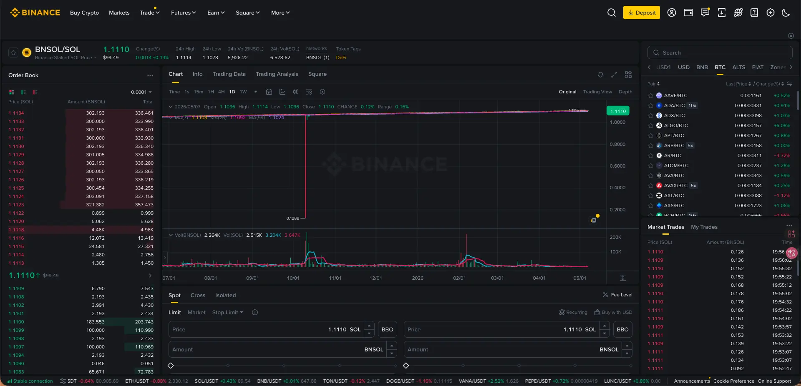
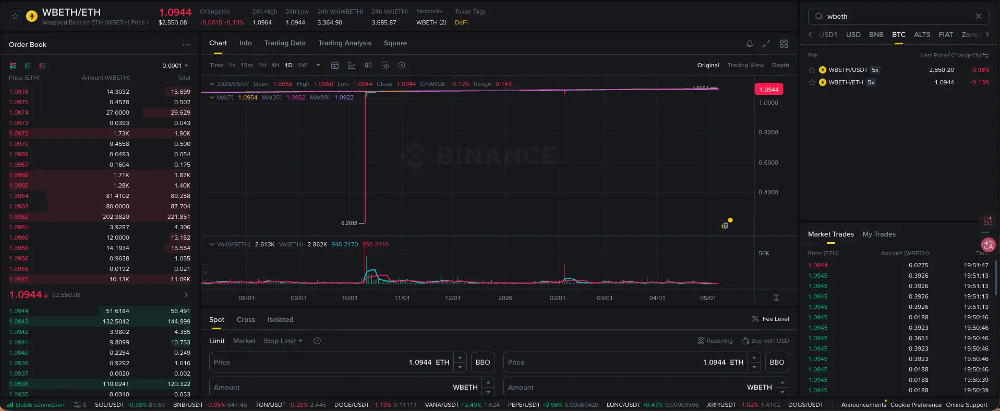

OKX / Binance 多账户资金费率套利策略的实盘管理记录。 涵盖组合设计、保证金管理、wrapped asset 折价套利、反向套利， 以及 251011 黑天鹅事件的完整应急过程。
资金费率套利的经典结构：持有现货 + 做空永续合约，收取多头支付给空头的资金费率。 当费率为正时，空头每8小时收取一次费用；当费率为负且有利可图时，方向反转—— 借币卖出（做空现货）+ 做多永续合约，收取空头支付给多头的费用。 开仓与平仓均有成本，因此入场需要综合考量借币利率、当前费率水平以及交易摩擦损耗。
实际执行中，利润来源有三层：
① 纯资金费率套利 — 在 vanilla 榜单中筛选费率高、OI 大、流动性好的币种，建立对冲头寸。
② Wrapped Asset 折价套利 — BETH/ETH、OKSOL/SOL、WBETH/ETH 等质押代币存在二级市场折价。
折价买入 wrapped asset + 做空对应合约，多赚一层折价回归收益。
③ Staking 收益叠加 — OKSOL、BETH 等本身有质押收益，叠加在资金费率之上，增强回报。
组合设计围绕几个硬约束展开：
以下为一份已脱敏的示例配置：
| Pair | 占比 | 周化收益率（参考） | 备注 |
|---|---|---|---|
| 品种 A（稳定型） | 0.10 | ~0.14% | 稳定 |
| 品种 B（质押型） | 0.30 | ~0.13% | 质押品种 |
| 品种 C | 0.20 | ~0.08% | |
| 品种 D（大币种） | 0.40 | ~0.11% | |
| 组合合计 | 1.00 | ~0.11% | 年化 ~5.76%（无杠杆） |
* 以上为脱敏后的示例配置，非客户实际数据。无杠杆基础收益率。杠杆会放大收益，也会放大黑天鹅风险。
多账户管理的核心是保证金率（MMR）和可用保证金（avail_eq）的持续监控。 两者缺一不可：MMR 低意味着强平风险，avail_eq 为负意味着 close-only 状态，无法开新仓。
BETH/ETH 和 OKSOL/SOL 的折价套利是策略的重要组成部分，但也带来流动性风险：
| 品种 | 正常折价 | 1011 最低折价 | 流动性 | 赎回周期 |
|---|---|---|---|---|
| OKSOL/SOL | 千 1 - 千 2 | 0.9880（千 12） | 中等 | ~5 天 / 即时赎回（个人固定额度每日 240 SOL） |
| BETH/ETH | 千 3 - 千 5 | 0.9941（千 6） | 极差 | ~56 天 / 即时赎回（个人固定额度每日 100 ETH） |
| WBETH/ETH（Binance） | 千 1 | — | 较好 | 智能合约兑换，实时 |
* OKSOL 折价在 1011 黑天鹅当日最低触及 0.9880，但因有即时赎回渠道（每日 240 SOL），相比 BETH 提供了关键缓冲。
本次黑天鹅事件由多重因素叠加引发。根据事后收集的信息，事件链大致如下：

在事件之前，我们的套利结构是经典的双腿对冲：做空永续合约（空头腿）， 同时向交易所借 SOL 和 ETH（多头腿），为了充分利用闲置资产， 将借来的 SOL 和 ETH 质押成了 BNSOL 和 WBETH 以获取额外的质押收益。
当市场恐慌蔓延，BNSOL/SOL 和 WBETH/ETH 也出现了脱锚。 我们质押的 BNSOL 和 WBETH 价值缩水，导致质押品总价值低于最低保证金。 交易所随即启动强制平仓：在极低的价格将我们的 BNSOL 和 WBETH 卖出，用于偿还借贷。


这就是亏损的根本原因：现货多头腿（质押品）在最低点被强制卖出， 而空头合约腿仍在。哪怕后来脱锚恢复、价格回升，多头仓位已经没了， 账户只剩裸露的空头合约，不再方向中性。最终多个账户净值腰斩。
事件发生后，核心任务是尽快清理剩余的 SOL 相关仓位，尽可能保住 OKSOL 的赎回渠道。
| 账户类别（按本位） | 大致数量 | 结果 |
|---|---|---|
| ETH本位账户 | 多个 | 净值大幅下跌，个别账户亏损约 140 ETH |
| USDT本位账户 | 多个 | 部分触发强平或自动减仓 |
| BTC本位账户 | 少数 | 配置较轻的账户损失相对可控 |
* 具体账户数量和亏损数字已做模糊化处理，以保护客户隐私。
事件后 OKSOL 折价一度达到千 12，但随后快速恢复到千 2 以内。 在折价回到千 2 以内时逐步出清剩余 SOL 仓位，折价损失可控。 后来 OKSOL 折价进一步收窄至万 4-万 5，此时直接卖出比赎回（需付万 7.5 借贷费）更划算。
ETH 仓位是最难处理的部分。BETH 流动性极差，折价在千 4-千 5 之间徘徊， 赎回排队长达 56 天，每日赎回额度仅 100 ETH。
最终策略是分优先级处理：保证金紧张的账户（USDT本位账户组）优先折价出仓， 保证金充裕的账户（ETH本位账户组）等待赎回或折价回归。 同时利用借币平仓来降低费率风险——借币利率每天约 0.68bp，BETH 收益每天约 0.696bp， 基本打平，不亏小赚。
黑天鹅后，一些小币种的资金费率持续恶化。全部账户的 WIF-USDT-SWAP 被清仓， XPL 等也被移除。这些品种在正常行情下贡献收益，但在极端行情中流动性不足、折价波动大， 反而成为负担。
当多个账户都需要减仓时，优先级排序：
OKX 的赎回规则：即时赎回有每日限额，取个人固定额度和平台动态额度中较小者。 超出部分进入链上排队，约 56 天。个人固定额度：ETH 100 枚、SOL 240 枚。 实际操作中发现上午 11:00 左右赎回的 SOL 到账最快，可能与平台每日额度重置时间有关。
散口（unhedged exposure）是净值波动的隐藏来源。常见原因：
在 ETH 仓位处理中面临一个关键权衡：是折价千 5 出 BETH（实亏 0.5%）， 还是借币平仓支付每天 0.68bp？如果折价能在几天内回归，等是划算的； 如果折价持续数周不回归，借币平仓反而是更好的选择。 核心是判断折价回归的时间预期。
调仓过程中观察到一个现象：大仓位参与进去后，该币种的资金费率表现会变差； 减仓后费率表现会好转。估算仓位规模对资金费率的弹性，是一个值得深入研究的方向。
很多问题放在纸面上需要大量建模和计算，但用测试账户直接操作很快就清晰了。 例如：OKB 质押后能否作为保证金？买入 OKB 对现有仓位 MMR 的影响？ 与其复杂地计算半天还不一定对，不如直接测试——一测试就什么都清楚了。
资金费率套利本质上是卖保险——平时稳定赚保费， 极端行情赔大钱。理解这一点，才能正确看待收益和风险的关系。
这次亏损的根本原因不是方向判断失误，而是质押品脱锚 + 借贷结构造成的结构性脆弱。 借币买入现货 → 质押成 wrapped asset → 质押品脱锚 → 价值缩水 → 强制平仓。 这个链条在正常行情下运转良好（吃费率 + 质押收益），但在极端行情中每一步都是致命的。
BETH 的流动性困境是这次事件中最大的教训。Wrapped asset 的折价套利收益看起来很美好， 但流动性差的品种在极端行情中会让仓位变成"死仓"——既卖不掉，也赎不回。 流动性是黑天鹅中最稀缺的资源。
紧急情况下，靠人的判断，不靠自动化系统。申请特批需要个个攻克—— 有一个人 say no 就完蛋。闲时扩展关系、了解同事的工作、建立信任， 这些看似和策略无关的事情，在关键时刻决定了你能多快调动资源。
这份报告记录了真实的亏损和失误：质押品脱锚被强平、BETH 流动性陷阱、 散口未及时处理导致的额外损失——这些都是花钱买来的教训。 坦诚面对亏损，比粉饰结果更有价值。真正的树，而不是精致的塑料盆景。
| 工具 | 用途 |
|---|---|
| Grafana | 账户净值 / 仓位 / Exposure 可视化面板 |
| MongoDB (DBeaver) | 仓位数据查询、账户状态监控 |
| GitHub (params_dsxo) | 策略参数配置管理 |
| OKX API | 账户操作、赎回、资金划转 |
| Bybit API | 跨交易所套利执行 |
| Binance API | 子账户只读监控 |
| Cursor | 可视化页面开发 |